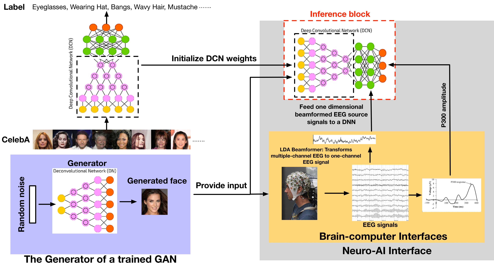

My name is Zheng-wei Wang (王正蔚). I obtained my Ph.D. at Insight Centre for Data Analytics, Dublin City University, where I was advised by Prof. Tomas E. Ward and Dr. Graham Healy. My Ph.D. is carried out in the area of neuroscience and deep learning. We proposed a Neuroscore derived from human's EEG signals to effectively evaluate the performance for Generative Adversarial Networks (GANs). Here is my Ph.D. Thesis.
I am currently a Research Fellow working with Prof. Aljosa Smolic. My current research interest focuses on video understanding especially for video action recognition.
